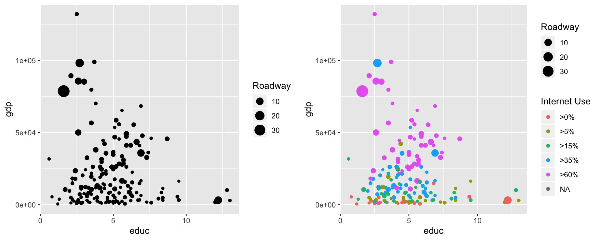
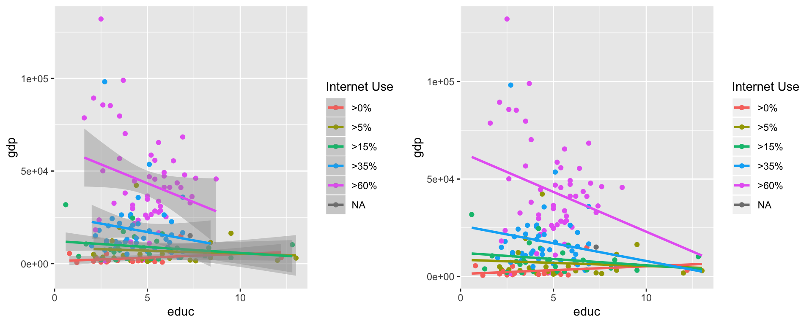
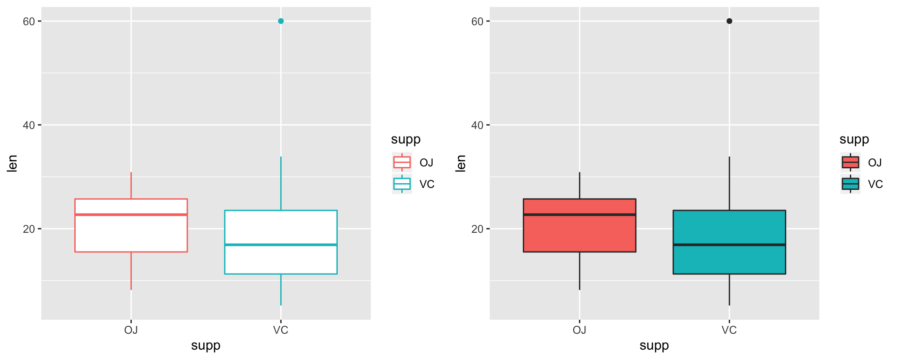
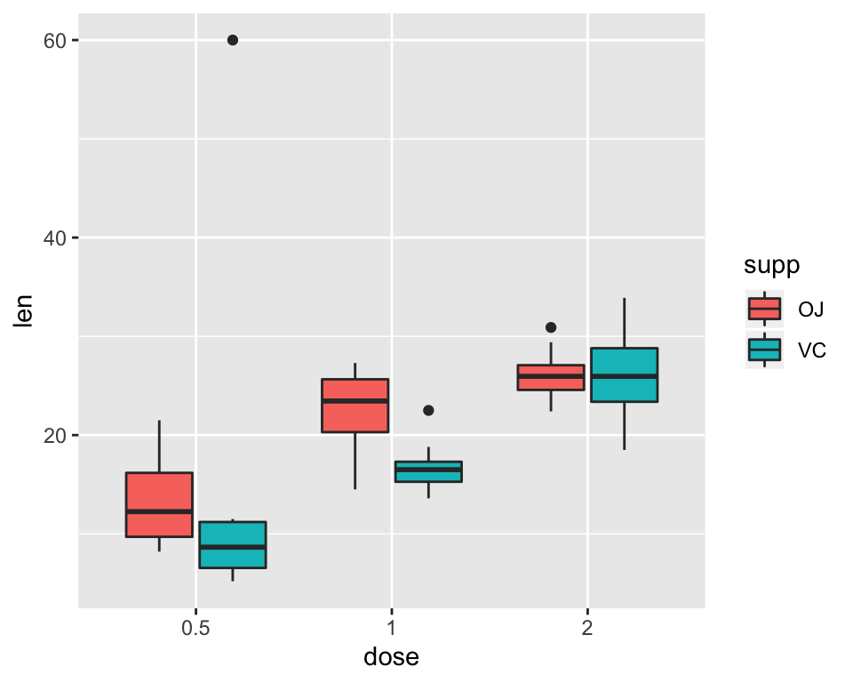
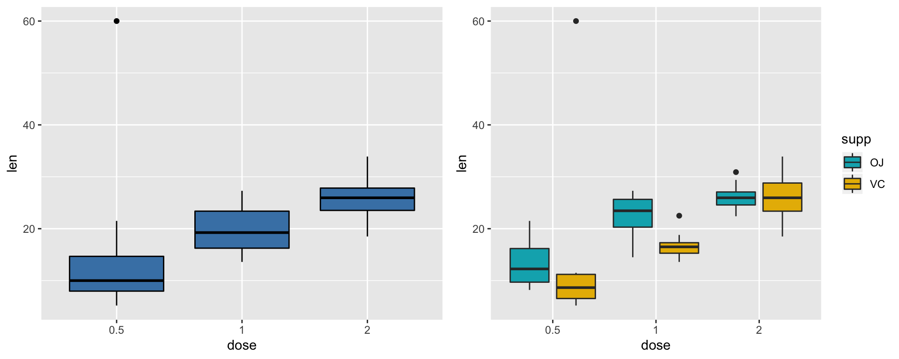
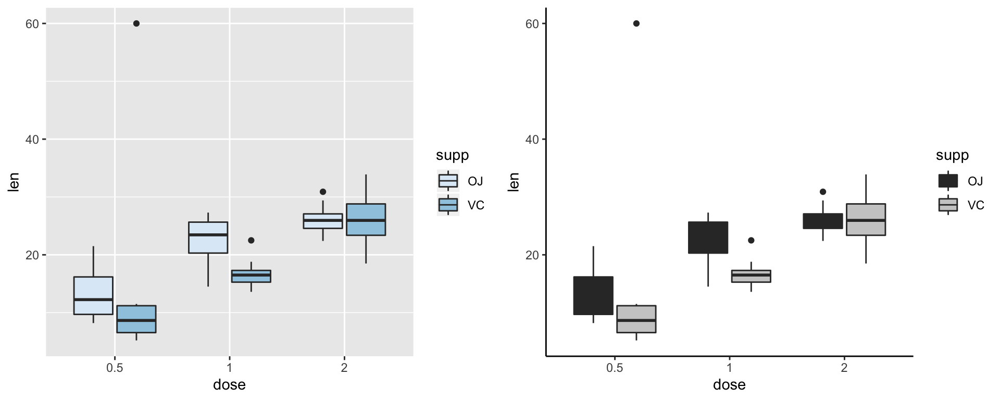
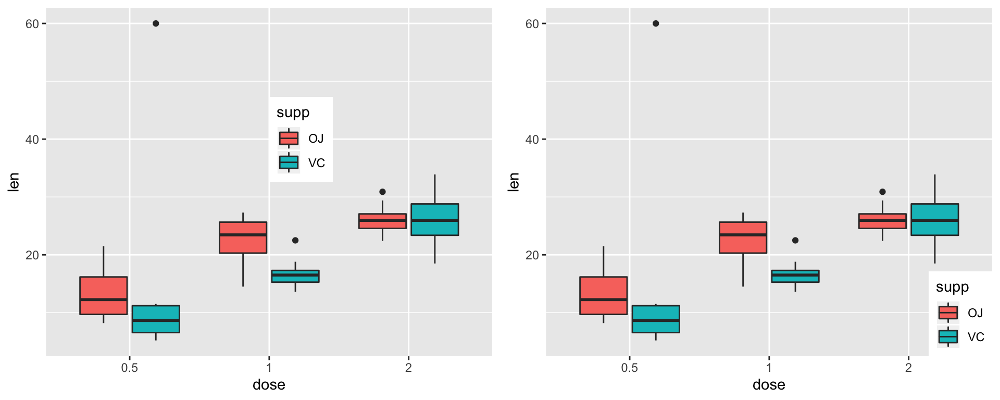
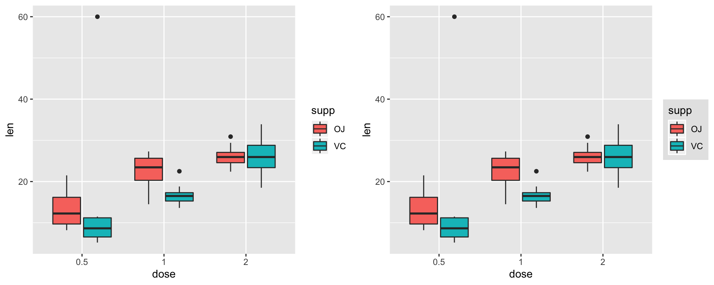

Intro to ggplot2: A grammar for graphics
Introducation
ggplot2 is a graphing library in R that makes beautiful graphs. It is a R package created by R programmer Hadley Wickham. ggplot2 is one of the most widely used R packages. Moreover, it builds data graphics incrementally from small pieces of code.
The first time you want to use a package, you need to install it. To do so, you type:
install.packages('ggplot2')You then need to activate by executing the command:
library(ggplot2)Each time you start an R session you will need to activate the package(s) you need, but you don’t need to install them again.
Data Applied
We will be using the data set CIACountries from the mdsr package. First, we have to intall and library the mdsr package.
install.packages('mdsr')library(mdsr)The CIACountries data table contains the following seven variables for 236 countries:
- population (pop)
- area (area)
- gross domestic product (gdp)
- percentage of GDP spent on education (educ)
- length of roadways per unit area (roadways)
- internet use as a fraction of the population (net_users)
- number of barrels of oil produced per day (oil_prod)
We can apply the head function to havea a look of the CIACountries data table. The %>%knitr::kable() command just make is part of table looks better than before.
head(CIACountries) %>% knitr::kable()| country | pop | area | oil_prod | gdp | educ | roadways | net_users |
|---|---|---|---|---|---|---|---|
| Afghanistan | 32564342 | 652230 | 0 | 1900 | NA | 0.0646244 | >5% |
| Albania | 3029278 | 28748 | 20510 | 11900 | 3.3 | 0.6261305 | >35% |
| Algeria | 39542166 | 2381741 | 1420000 | 14500 | 4.3 | 0.0477193 | >15% |
| American Samoa | 54343 | 199 | 0 | 13000 | NA | 1.2110553 | NA |
| Andorra | 85580 | 468 | NA | 37200 | NA | 0.6837607 | >60% |
| Angola | 19625353 | 1246700 | 1742000 | 7300 | 3.5 | 0.0412521 | >15% |
The ToothGrowth data table contains the following seven variables for 60 guinea pigs:
- Tooth length (len)
- Supplement type (supp)
- Dose in milligrams/day (dose)
data("ToothGrowth")
# Load data and convert dose to a factor variable
ToothGrowth$dose <- as.factor(ToothGrowth$dose)
# add a outlier to the dataset
ToothGrowth[1,1] <- 60
head(ToothGrowth) %>% knitr::kable()| len | supp | dose |
|---|---|---|
| 60.0 | VC | 0.5 |
| 11.5 | VC | 0.5 |
| 7.3 | VC | 0.5 |
| 5.8 | VC | 0.5 |
| 6.4 | VC | 0.5 |
| 10.0 | VC | 0.5 |
1.ggplot Syntax
Unlike base graphics, ggplot works with dataframes and not individual vectors. The ggplot()command creates a plot, with the argument data telling us which data to use. The aes() command within ggplot() indicates the desired x and y variables.
ggplot(data = CIACountries, aes(y=gdp, x = educ))Although datafram, x and y are specified, there are no points or lines in it. This is because I have only told ggplot what dataset to use and what columns should be used for X and Y axis. I haven’t explicitly asked it to draw any points.
The following are the Geoms( Bars, lines, text, points) options to apply on the plot
geom_bar(): creates a layer with bars representing different statistical propertiesgeom_point(): creates a layer with data points (as on a scatterplot)geom_line(): creates a layer with a straight linegeom_smooth(): creates a layer with a ‘smoother’ (a line that summarizes the data as a whole rather than connecting individual points)geom_histogram(): creates a layer with a histogramgeom_boxplot(): creates a layer with a box-whisker diagramgeom_text(): creates a layer with text in itgeom_errorbar(): creates a layer with error bars in itgeom_hline()andgeom_vline(): creates a layer with a user-defined horizontal or vertical line respectively.
2. Scatter plot
2.1 Basic Scatter plot
Let’s make a scatterplot by adding points using a geom layer called geom_point. The color, size and shape can be applied to in the geom_point to change the color, size and shape of the points in scatter plot
# Basic Scatter plot
ggplot(data = CIACountries, aes(y=gdp, x = educ)) + geom_point()
# Change the point color
ggplot(data = CIACountries, aes(y=gdp, x = educ)) + geom_point(color="steelblue")
# Change the point size, and shape
ggplot(data = CIACountries, aes(y=gdp, x = educ)) + geom_point(size=2, shape=23)2.2 Change the point color/size automatically
The command size, shape and color are used to set size, shape and color vary based on state categories. Users can decide to set one, two or all of them.
guide_legend(title="") is used to add the legend name. If size has been set to vary based on state categories, the command of add legend name is size=guide_legend(title=""). If color has been set to vary based on state categories, the command of add legend name is color=guide_legend(title="").
# Change the point size
ggplot(data = CIACountries, aes(y=gdp, x = educ)) + geom_point(aes(size = roadways)) +
guides(size=guide_legend(title="Roadway"))
# Change the point size and coloe
ggplot(data = CIACountries, aes(y=gdp, x = educ)) + geom_point(aes(color = net_users, size = roadways)) +
guides(color=guide_legend(title="Internet Use"), size=guide_legend(title='Roadway'))
2.3 Label points in the scatter plot
The function geom_text() can be used :
ggplot(data = CIACountries, aes(y=gdp, x = educ)) + geom_text(aes(label = country), size = 3) 2.4.1 Add regression lines
The functions geom_smooth() can be used to add regression lines to a scatter plot
geom_smooth(method="auto", se=TRUE, fullrange=FALSE, level=0.95)method: smoothing method to be used. Possible values are lm, glm, gam, loess, rlm. The default value is loess.se: If TRUE, confidence interval is displayed around smooth.fullrange: If TRUE, the fit spans the full range of the plotlevel: level of confidence interval to use. Default value is 0.95
# Add the regression line
ggplot(data = CIACountries, aes(y=gdp, x = educ)) + geom_point()+
geom_smooth(method=lm)
# Remove the confidence interval
ggplot(data = CIACountries, aes(y=gdp, x = educ)) + geom_point()+
geom_smooth(method=lm, se=FALSE)2.4.2 Change the points and lines
shape and color in the geom_point() can chance the color of shape of the points in scatter plot. color and linetype in the geom_smooth() can change color and linetype of the line.
ggplot(data = CIACountries, aes(y=gdp, x = educ)) + geom_point(shape=10, color="steelblue")+
geom_smooth(method=lm,se=FALSE, linetype="dashed", color="orange")2.4.3 Multiple regression lines
In the scatter plot, users can plot more than one regression line in the plot by the following code. User need to set color change automatically by the command color. Then user need to have the command geom_smooth() to add the regression lines. Then there would be multiple regression lines in one graph.
Command set fullrange equals TRUE can extend the regression lines in the graph.
ggplot(data = CIACountries, aes(y=gdp, x = educ, color=net_users)) +
geom_point()+
geom_smooth(method=lm)+
guides(color=guide_legend(title="Internet Use"))
# Remove confidence intervals
# Extend the regression lines
ggplot(data = CIACountries, aes(y=gdp, x = educ, color=net_users)) +
geom_point()+
geom_smooth(method=lm, se=FALSE, fullrange=TRUE)+
guides(color=guide_legend(title="Internet Use"))
2.5.1 Change the point color/size manually
In previous section, if there exist multiple regression lines in the graph, the color and points would change automatically. The following command can set the color, size and shape manually:
scale_shape_manual(): for changeing point shapes manuallyscale_color_manual(): for changeing point colors manuallyscale_size_manual(): for changeing point sizes manually
The following example shows how to set the point and line color and size manually.
ggplot(data = CIACountries, aes(y=gdp, x = educ, color=net_users)) +
geom_point()+
geom_smooth(method=lm, se=FALSE, fullrange=TRUE)+
guides(color=guide_legend(title="Internet Use"))+
scale_color_manual(values=c('#999999','#E69F00', '#56B4E9','#0072B2', '#D55E00', '#CC79A7'))+
scale_size_manual(values=c(1,2,3,4,5))2.5.2 Change the point color/size manually by color group
It is also possible to change manually point and line colors using the functions :
scale_color_brewer(): to use color palettes from RColorBrewer packagescale_color_grey(): to use grey color palettes
# Use brewer color palettes
ggplot(data = CIACountries, aes(y=gdp, x = educ, color=net_users)) +
geom_point()+
geom_smooth(method=lm, se=FALSE, fullrange=TRUE)+
guides(color=guide_legend(title="Internet Use"))+
scale_color_brewer(palette="Dark2")
# Use grey scale
ggplot(data = CIACountries, aes(y=gdp, x = educ, color=net_users)) +
geom_point()+
geom_smooth(method=lm, se=FALSE, fullrange=TRUE)+
guides(color=guide_legend(title="Internet Use"))+
scale_color_grey()3. Box plot
3.1 Basic Box plot
Let’s make a box plot by adding command geom_boxplot(). Set notch equals TRUE can change the shape of the box plot.
# Basic box plot
ggplot(data = ToothGrowth, aes(y=len, x = supp)) + geom_boxplot()
# Notched box plot
ggplot(data = ToothGrowth, aes(y=len, x = supp)) + geom_boxplot(notch=TRUE)3.2 Change Outlier and add mean points to a box plot
geom_boxplot() allowed user to change color, shape and zie of the outlier points by the following commands.
outlier.shape(): for changeing outlier point shapes manuallyoutlier.colour(): for changeing outlier point colors manuallyoutlier.size(): for changeing outlier point sizes manually
The command stat_summary() can be used to add mean points to a box plot
# Change outlier, color, shape and size
ggplot(data = ToothGrowth, aes(y=len, x = supp))) + geom_boxplot()+
geom_boxplot(outlier.colour="red", outlier.shape=8, outlier.size=4)
# add mean points to a box plot
ggplot(data = ToothGrowth, aes(y=len, x = supp))) + geom_boxplot()+
stat_summary(fun.y=mean, geom="point", shape=23, size=4)3.3 Box plot with dots
The points can be added to box plot by comman geom_dotplot() and geom_jitter().
# Box plot with dot plot
ggplot(data = ToothGrowth, aes(y=len, x = supp)) + geom_boxplot()+
geom_dotplot(binaxis='y', stackdir='center', dotsize=0.3)
# Box plot with jittered points
# 0.2 : degree of jitter in x direction
ggplot(data = ToothGrowth, aes(y=len, x = supp)) + geom_boxplot()+
geom_jitter(shape=16, position=position_jitter(0.2))3.4 Select item to display
The command scale_x_discrete() can use to select the box to display on the boxplot.
ggplot(data = ToothGrowth, aes(y=len, x = supp)) + geom_boxplot()+
scale_x_discrete(limits=c("OJ"))3.5.1 Change box plot colors automatically
The command color is used to set the line color of box plot vary based on state categories. The command fill is used to set the box color of box plot vary based on state categories.
# Change box plot line colors by groups
ggplot(data = ToothGrowth, aes(y=len, x = supp color=supp)) + geom_boxplot()
# Change box plot colors by groups
ggplot(data = ToothGrowth, aes(y=len, x = supp, fill=supp)) + geom_boxplot()
Boxplot Side by side
ggplot(data = ToothGrowth, aes(x = dose, y = len)) + geom_boxplot(aes(fill = supp))
3.5.2 Change box plot colors manually
The command color is used to set the line color of box plot.\ The command fill is used to set the box color of box plot.\ The command scale_fill_manual is used to set the box color of of each box.
# Use single color
ggplot(ToothGrowth, aes(x = dose, y = len)) + geom_boxplot(fill="steelblue", color="black")
# Use custom color palettes
ggplot(ToothGrowth, aes(x = dose, y = len)) +
geom_boxplot(aes(fill = supp), position = position_dodge(0.9)) +
scale_fill_manual(values = c("#00AFBB", "#E7B800"))
It is also possible to change manually point and line colors using the functions :
scale_color_brewer(): to use color palettes from RColorBrewer packagescale_color_grey(): to use grey color palettes
# use Blues color palettes
ggplot(ToothGrowth, aes(x = dose, y = len, fill=supp)) + geom_boxplot() +
scale_fill_brewer(palette="Blues")
# Use grey scale
ggplot(ToothGrowth, aes(x = dose, y = len, fill=supp)) + geom_boxplot() +
scale_fill_grey() + theme_classic() 
4. Change Legend
4.1 Change Legend Position
The command theme(legend.position="") can be used to set the position of the legend. The legend also can be removed by this command.
# Move the legend to top
ggplot(ToothGrowth, aes(x = dose, y = len, fill=supp)) + geom_boxplot() +
theme(legend.position="top")
# Move the legend to bottom
ggplot(ToothGrowth, aes(x = dose, y = len, fill=supp)) + geom_boxplot() +
theme(legend.position="bottom")
# Remove legend
ggplot(ToothGrowth, aes(x = dose, y = len, fill=supp)) + geom_boxplot() +
theme(legend.position="none")Move the legend manually
The command legend.justification and legend.position can set the position of the legend manually. x,y is 0,0 (bottom left) to 1,1 (top right).
# Put legend manually
ggplot(ToothGrowth, aes(x = dose, y = len, fill=supp)) + geom_boxplot() +
theme(legend.justification=c(0,0), legend.position=c(.5, .5))
# Put bottom-right corner of legend box in bottom-right corner of graph
ggplot(ToothGrowth, aes(x = dose, y = len, fill=supp)) + geom_boxplot() +
theme(legend.justification=c(1,0), legend.position=c(1,0))
4.2 Modifying the legend box
# Remove the background of the ledgend box
ggplot(ToothGrowth, aes(x = dose, y = len, fill=supp)) + geom_boxplot() +
theme(legend.background = element_rect())
# Change part of the color inside the legend
ggplot(ToothGrowth, aes(x = dose, y = len, fill=supp)) + geom_boxplot() +
theme(legend.background = element_rect(fill="gray90", size=.5, linetype="dotted"))
4.3 Modifying the text of legend titles and labels
The scale_fill_manual command can change the color, legend titles and labels
ggplot(ToothGrowth, aes(x = dose, y = len, fill=supp)) + geom_boxplot() +
# Using a manual scale instead
scale_fill_manual(values=c("#999999", "#E69F00"),
name="Internet use \nPercentage",
breaks=c("OJ", "VC"),
labels=c("orange juice", "vitamin C"))4.4 Modifying legend title and labels
The following command change the text style of legend.
legend.title = element_text(): legend title.legend.text = element_text(): legend categories.
The detial of Formatting choices will be explain in 5.1.
ggplot(ToothGrowth, aes(x = dose, y = len, fill=supp)) + geom_boxplot() +
# Using a manual scale instead
scale_fill_manual(values=c("#999999", "#E69F00"),
name="Internet use \nPercentage",
breaks=c("OJ", "VC"),
labels=c("orange juice", "vitamin C"))+
theme(legend.title = element_text(colour="blue", size=16, face="bold"),
legend.text = element_text(colour="red", size = 14, face = "bold"))5.Set Layout
5.1 Change the Title and Axis Labels
There are two ways to change the Title and Axis Labels
ylab,xlabandggtitlelabs(y=' ', x=' ', title=' ')
# first method to change the Title and Axis Labels
ggplot(data = CIACountries, aes(y=gdp, x = educ)) + geom_point() +
ylab('Gross Domestic Product') +
xlab('Percentage of Gross Domestic \n Product Spent on Education') +
ggtitle('Gross Domestic Product and Education')
# second method to change the Title and Axis Labels
ggplot(data = CIACountries, aes(y=gdp, x = educ)) + geom_point() +
labs(y='Domestic Product',
x='Percentage of Product Spent on Education',
title= 'Domestic Product and Education')5.2 Altering the text style of axis or title
The following command change the text style of axis and title
plot.title = element_text(): plot title.axis.title = element_text(): axis title.axis.text = element_text(): appearance of axis values/numbers.
Formatting choices The font, colour, size and emphasis of any of these labels can be altered by arguments within element_text(your format).
- family: the font style. Examples of fonts include: “Palatino”, “Helvetica”, “Courier”, “Times”. For example, family = “Palatino”
- face: the type of emphasis, with options including bold, italic and “bold.italic”. For example, face = “bold.italic”
- colour: the colour can be changed to any of the colours listed here. For example, colour = “steelblue2”.
- size: the size of the text. For example, size = (3).
# first method to change the Title and Axis Labels
ggplot(data = CIACountries, aes(y=gdp, x = educ)) + geom_point() +
ylab('Gross Domestic Product') +
xlab('Percentage of Gross Domestic \n Product Spent on Education') +
ggtitle('Gross Domestic Product and Education')+
theme(axis.text=element_text(colour="blue", size=10), # change x and y label words
axis.title=element_text(colour="orange", size=12, face="bold"), # change x-axis and y-axis title words
plot.title=element_text(colour="red", size=15, face="bold")) # change title words size
5.3 Removing a label
The command element_blank(), the following example remove the title and axis. This command also can remove the tiltle of legend.
# first method to change the Title and Axis Labels
ggplot(data = CIACountries, aes(y=gdp, x = educ)) + geom_point() +
ylab('Gross Domestic Product') +
xlab('Percentage of Gross Domestic \n Product Spent on Education') +
ggtitle('Gross Domestic Product and Education')+
theme(axis.text= element_blank(),
axis.title= element_blank(),
plot.title= element_blank()) 5.4 Scale
The coord_trans() function can put data on a logarithmic scale. A logarithmic scale would make the plot much more readable.
ggplot(data = CIACountries, aes(y=gdp, x = educ)) +
geom_point() +
guides(color=guide_legend(title="Internet Use"),
size=guide_legend(title='Roadway')) +
coord_trans(y = "log10")5.5 Facets
There alsp exist functions that allows the user to split one plot into multiple plots based on a factor included in the dataset.
facet_wrap()arranges a one-dimensional sequence of panels to allow them to cleanly fit on one page.facet_grid()allows you to form a matrix of rows and columns of panels.
facet_wrap()allows user to organise the panels as following:
ggplot(ToothGrowth, aes(x = dose, y = len)) +
geom_boxplot(aes(fill = supp)) +
facet_wrap(facets = vars(dose))
ggplot(ToothGrowth, aes(x = dose, y = len)) +
geom_boxplot(aes(fill = supp)) +
facet_wrap(facets = vars(dose), ncol=2)
facet_grid()allows user to organise the panels only by rows (or only by columns):
Split in horizontal direction
ggplot(ToothGrowth, aes(x = dose, y = len)) +
geom_boxplot(aes(fill = supp), position = position_dodge(0.9)) +
scale_fill_manual(values = c("#00AFBB", "#E7B800")) +
facet_grid(cols = vars(supp))Split in vertical direction
ggplot(ToothGrowth, aes(x = dose, y = len)) +
geom_boxplot(aes(fill = supp), position = position_dodge(0.9)) +
scale_fill_manual(values = c("#00AFBB", "#E7B800")) +
facet_grid(rows = vars(supp))Split in both vertical and horizontal direction
# Facet by two variables: dose and supp.
# Rows are dose and columns are supp
ggplot(ToothGrowth, aes(x = dose, y = len)) +
geom_boxplot(aes(fill = supp), position = position_dodge(0.9)) +
scale_fill_manual(values = c("#00AFBB", "#E7B800")) +
facet_grid(rows = vars(dose), cols = vars(supp))6.Multiple plot
6.1 Multiple plot
Although facet can splitting one plot into multiple plots, sometimes users may want to produce a single figure that contains multiple plots using different variables or even different data frames. The ggpubr package allows us to combine separate ggplots into a single figure using ggarrange():
install.packages("ggpubr")You then need to activate by executing the command:
library(ggpubr)## 1. Create a box plot (p1)
p1 <- ggplot(ToothGrowth, aes(x = dose, y = len)) +
geom_boxplot(aes(fill = supp), position = position_dodge(0.9)) +
scale_fill_manual(values = c("#00AFBB", "#E7B800"))
# 2. Create a scatter plot (p2)
p2 <- ggplot(data = CIACountries, aes(y=gdp, x = educ)) + geom_point(aes(color = net_users, size = roadways)) +
guides(color=guide_legend(title="Internet Use"), size=guide_legend(title='Roadway'))
# 3. Create a box plot (p3)
p3 <- ggplot(ToothGrowth, aes(x = dose, y = len, fill=supp)) + geom_boxplot() +
scale_fill_grey() + theme_classic() figure <- ggarrange(p1, p2, p3,
labels = c("A", "B", "C"), # label the plots
ncol = 2, nrow = 2)
figure6.1 Multiple plot with layout
The nested ggarrange() functions can change column/row span of plots.
ggarrange(
p3, # First row with box plot
# Second row with box and scatter plots
ggarrange(p1, p2, ncol = 2, labels = c("B", "C")),
nrow = 2,
labels = "A" # Label of the line plot
)